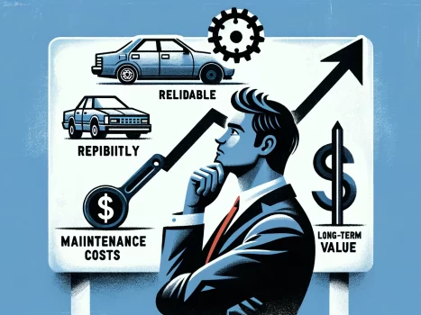

Carros Baratos Usados com Baixa Depreciação: Investimento Inteligente ou Risco Potencial?
10 de setembro de 2024
Comprar um carro usado barato com baixa depreciação pode parecer uma oportunidade tentadora para muitos compradores. Afinal, quem não gostaria de adquirir um veículo por um preço acessível e ainda minimizar a perda de valor ao longo do tempo? No entanto, como em qualquer investimento, há vantagens e desvantagens a serem consideradas ao optar por essa estratégia.
Por um lado, escolher um carro usado que retenha seu valor ao longo do tempo pode ser um investimento inteligente a longo prazo. Carros de marcas conhecidas por sua durabilidade e confiabilidade, bem como modelos que mantêm uma demanda estável no mercado de usados, têm maior probabilidade de manter seu valor residual por mais tempo. Isso significa que você pode desfrutar do benefício de possuir um veículo por um custo inicial relativamente baixo e, potencialmente, vendê-lo por um preço próximo ao que pagou anos depois.
Além disso, carros usados com baixa depreciação também podem representar uma oportunidade para quem está procurando economizar dinheiro a longo prazo. Ao minimizar a perda de valor do veículo, os proprietários podem economizar significativamente em custos de propriedade, como depreciação, seguros e impostos veiculares. Isso pode resultar em economias substanciais ao longo do tempo, tornando a compra de um carro usado com baixa depreciação uma opção atraente para muitos compradores.
No entanto, há também riscos potenciais a serem considerados ao optar por um carro usado com baixa depreciação. Em primeiro lugar, é importante lembrar que a depreciação de um carro é influenciada por uma variedade de fatores, incluindo a marca, o modelo, a condição do veículo, a quilometragem e até mesmo o mercado econômico. Embora alguns carros possam manter seu valor melhor do que outros, não há garantia de que um carro usado barato reterá seu valor no futuro.
Além disso, carros usados com baixa depreciação podem apresentar custos de manutenção mais elevados ao longo do tempo. Como esses veículos tendem a ser mais antigos e terem mais quilometragem, eles podem exigir mais reparos e manutenção para manter seu desempenho e confiabilidade. Isso pode resultar em despesas adicionais e potencialmente compensar qualquer economia inicial obtida com a compra do carro.
A decisão de comprar um carro usado barato com baixa depreciação é uma questão complexa que requer cuidadosa consideração de diversos fatores. Embora possa representar um investimento inteligente a longo prazo e uma oportunidade de economizar dinheiro, também há riscos potenciais a serem levados em conta. Ao pesar os prós e os contras e fazer uma pesquisa detalhada, os compradores podem tomar uma decisão informada que atenda às suas necessidades e objetivos financeiros.
Voltar